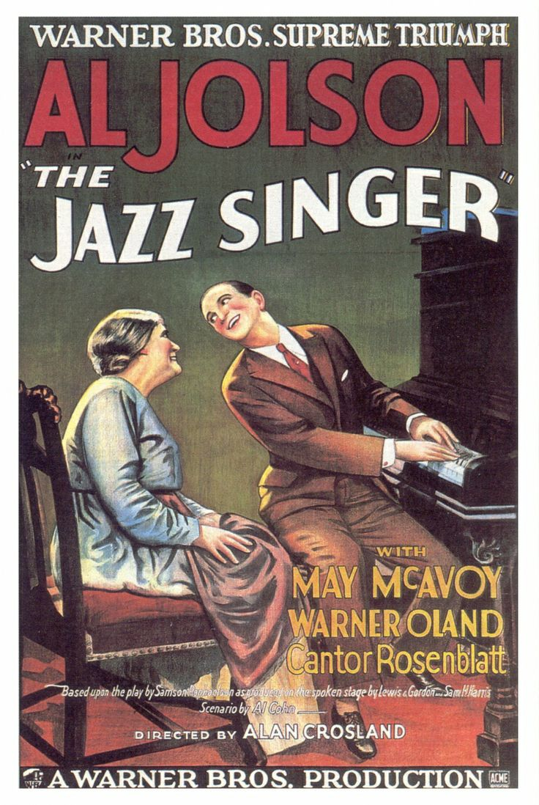
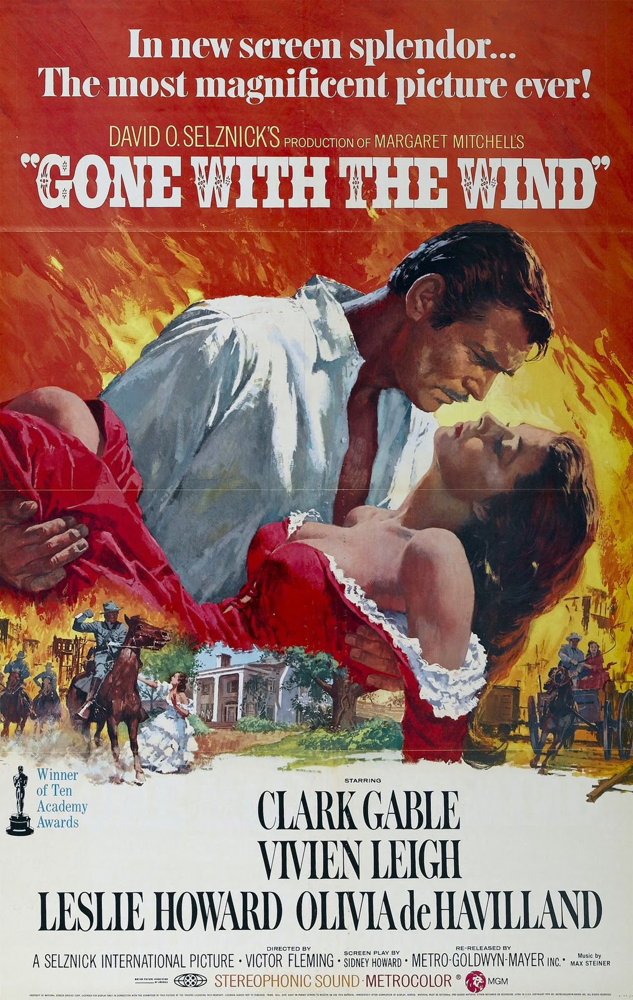
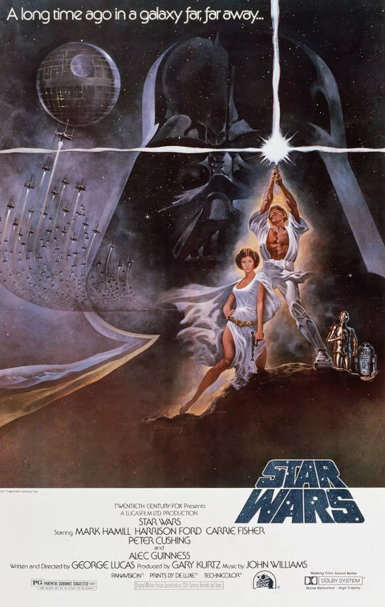
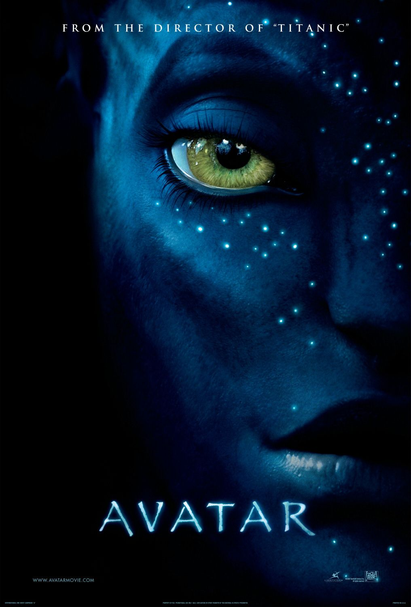

The Great Train Robbery (1903)
The Great Train Robbery is an important movie both to American cinema and culture. Focusing on two bandits breaking into a railroad office, the short Twelve minute movie depicts the ‘all American’ wild west train robbery.
Not only does this movie hold a significant spot in American culture, but it was also a milestone in filmmaking, using composite editing, on location shooting, and many camera moves. Some versions of the movie were also hand colored during certain scenes to add another dimension of reality.

The Jazz Singer (1927)
The Jazz Singer is the embodiment of the American dream, depicting a boy running away from home and growing up to be a successful jazz singer, not only gaining happiness and wealth, but also his father’s approval.
The Jazz Singer was also a revolutionary movie as it was the first feature length motion picture with synchronised music, singing, and speech.

Snow White and the Seven Dwarfs (1937)
As Walt Disney’s first fully animated feature film, and the first animated feature to be produced in English and in Technicolor, Snow White established its place as a driving force in a film and cultural revolution, produced in a time which is often considered the Golden Age of film. Upon its release, the film quickly grossed $8 million, an astonishing sum during the Great Depression, and a record breaking one for cinema.

Gone with the Wind (1939)
Based on the novel by Margaret Mitchell, Gone with the Wind is unique for its portrayal of a strong-willed, independent woman and its unusual glorification of the South during the Civil War. The film’s success despite its controversial themes could be due to the beginning of the Civil Rights Era, leading to women’s rights.

Citizen Kane (1941)
The themes presented in Citizen Kane have proven to be timeless. Telling the story of a man who is granted wealth and opportunity after a life of poverty, Citizen Kane speaks to the contradictory and ultimately hollow ideal of the “american dream”, revealing Kane as arrogant, thoughtless, and morally bankrupt, (causing Kane to lose his fortune, friends, and beloved wife) despite his change in fortune.

Psycho (1960)
Often said to be one the greatest films of all time, Psycho set a new standard for violence, deviant behavior and sexuality in American films. It is also said to be a work of cinematic art, as it was a departure from standard motion picture, and pioneered the slasher film genre.
Goldfinger (1964)
As American-Russo tensions began heating up, film producers took the political anxiety and spun it into an entertainment opportunity. Based on Ian Fleming's books, the James Bond series focuses on a British spy working to take down Russian and German enemies.
These movies brought along many anti-Russian feelings, and instilled fear into the public against the Soviet.

Jaws (1975)
With Spielberg’s perfect mix of sentiment, interesting characters, and suspense, Jaws’ found its way to the top of the box office and instilled a fear of the water into many.
With groundbreaking advances in animatronics and Computer Generated Imaging, Jaws also found itself in the gold class of 70's movie production.

Star Wars: A New Hope (1977)
A new breed of the nerds and geeks was created socially, those interested in Science Fiction and outer space, all due to this movie series. Star Wars has become a large part of 'geek' culture, and is seen everywhere even in modern times, with continued releases of movies and rereleases of remastered versions.
Furthermore, with the Star Wars films, special effects became a box office draw in and of themselves, as viewers were willing to pay just to see the amazing things Lucas’s team at Industrial Light and Magic (including such famous effects wizards as John Dykstra and sound designer Ben Burtt) were able to come up with.

Toy Story (1995)
Toy Story has cemented itself as one of the all time great children's movies, bringing the imagination of all young children to life. Depicting everyday life at any American family's house, Toy Story has become a movie to beat when it comes to household exposure.

The Matrix (1999)
The Matrix depicted the sense of detachment from reality that came with internet access, both reflecting and contributing to growing fears of potential hazards of technological advancement in the emerging digital age.
In addition to setting new trends in sci-fi, The Matrix popularized ‘bullet time’, a visual effect in which action within a scene progresses in slow motion while the camera’s viewpoint appears to move at normal speed, isolating a character and showing greater detail in a split second of action.

Avatar(2009)
James Cameron’s Avatar marks one of the most revolutionary accomplishments in film technology, a masterpiece championing new heights in 3D and CGI. While the dazzling alien universe earned $26.7 million in its first 24 hours in theatres, and has certainly had a lasting impact on cinematic technique and Hollywood’s emphasis on special effects, Avatar had little impact on American pop culture.
{kind=link}
{kind=link}
{kind=link}
{kind=link}
{kind=link}
{kind=link}